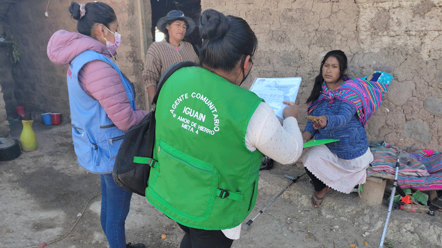
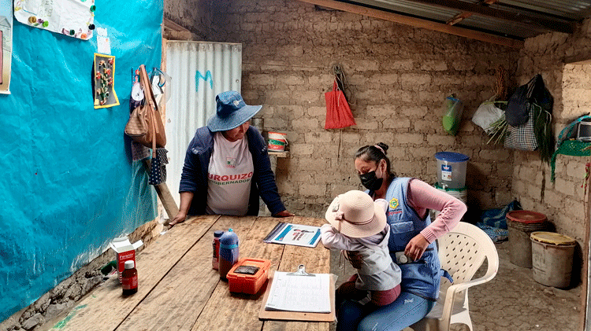
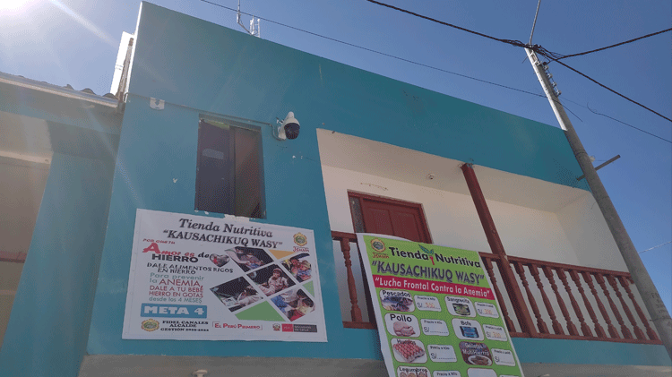
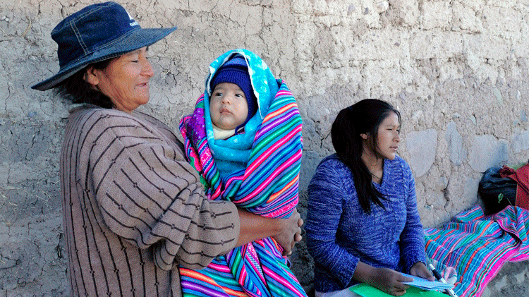
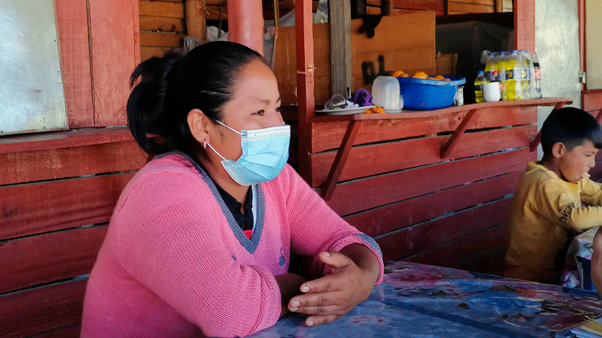
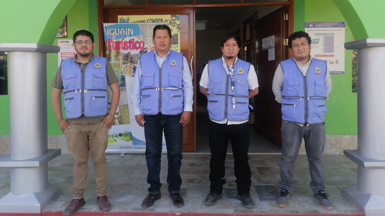
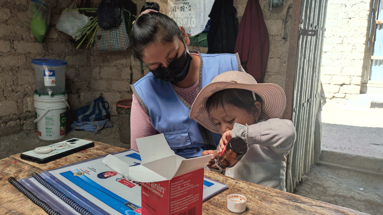
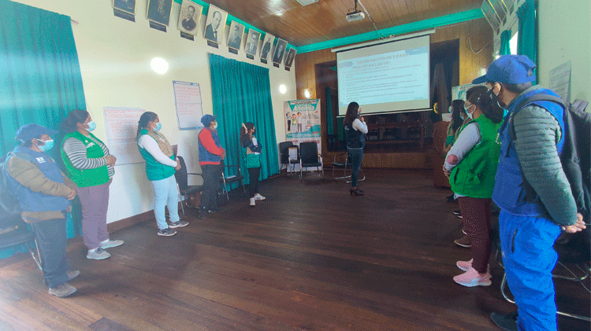
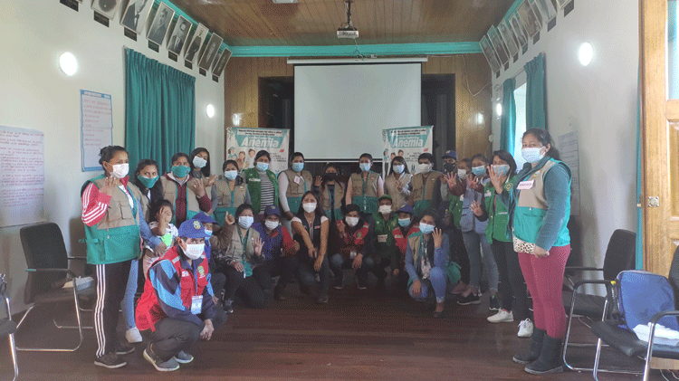
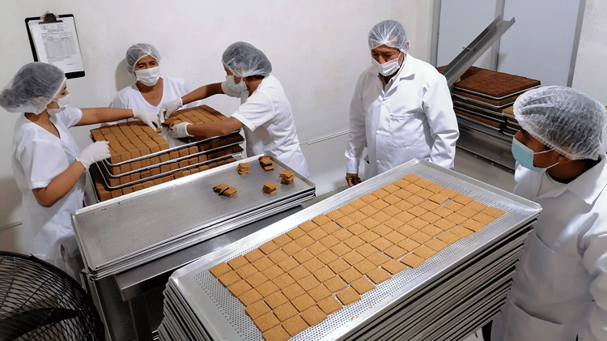

LAS CLAVES DE IGUAÍN:
Cómo un empobrecido distrito redujo su índice de anemia de 65% a 6,3%
Asentado en el Vraem, el llamado “valle de la droga”, y en una región donde se focalizó la violencia terrorista en los ochenta (Ayacucho), Iguaín es uno de los distritos más deprimidos del Perú con precarios servicios de comunicación y graves déficits de salud y educación. Sin embargo allí, desde 2015, se ejecuta una estrategia para enfrentar uno de los males silenciosos que arrincona y condiciona el desarrollo de la primera infancia.
En Iguaín, la anemia no ha encontrado un camino de fácil expansión: en seis años, el distrito redujo su prevalencia del 65% al 6,3% en menores de 5 años. Es un caso singular en una nación que no logra efectos significativos y donde esta afección afecta al menos a 4 de cada 10 niños, sobre todo, al área rural. Un modelo y diseño ejemplar que captó la atención de la Organización Mundial de la Salud por la mirada multisectorial hacia un problema sanitario que involucró a la comunidad, el aliado primordial.
LA EXPERIENCIA DE IGUAÍN
EL PAPEL DE LOS ACTORES SOCIALES
LOS ALIMENTOS FORTIFICADOS
LA EXPERIENCIA DE IGUAÍN
Iguaín, modelo de comunidad para enfrentar la anemia
La anemia era un mal desconocido para María Inga, a pesar de que Amy, su última hija, la padecía a los nueve meses de nacida. Era una niña desganada e inapetente. Dormía durante horas en una edad en la que, según los indicadores del desarrollo, los bebés suelen ser más activos, gatean sin aspavientos e intentan ponerse de pie. “Decaída estaba, apagadita —recuerda María en su casa de la comunidad de Antarumi, distrito de Iguaín, Ayacucho—, así que la llevamos a la posta para salir de dudas”.
Especulaba que su niña tenía “susto”, como desliza una creencia popular, pero el diagnóstico fue enfático: Amy tenía una enfermedad silenciosa que, originada principalmente por la falta de consumo de hierro, afecta, en la actualidad, a cuatro de cada diez niños menores de tres años en Perú, de acuerdo al Instituto Nacional de Estadísticas e Informática (INEI), basado en la última Encuesta Demográfica y de Salud Familiar. Es uno de los índices más altos en América Latina y, bajo la mirada de la Organización Mundial de la Salud (OMS), “un severo problema de salud pública”.
El Plan Multisectorial de Lucha contra la Anemia, planteado en 2018, propuso rebajar al 19% a nivel nacional la prevalencia de este mal en menores durante un período de tres años, hasta 2021. La reducción implicaba más de la mitad del índice, que entonces alcanzaba al 43,5% de la primera infancia; y para lograrlo, entre otras medidas, contemplaba la articulación intersectorial del Gobierno Nacional junto con los gobiernos regionales y locales. El objetivo no se alcanzó. Un informe del Colegio Médico del Perú apunta que, dentro de las razones, está la escasa y discontinua intervención del sector salud, la falta de compromiso de los niveles subnacionales de Gobierno, la esporádica acción de comunicación social y el desconocimiento de muchos servicios de salud en torno a la norma de prevención y tratamiento de la anemia, aprobada y publicada en abril de 2017. De modo que Perú sigue siendo un país asolado, donde apenas la tercera parte de los niños cubre sus necesidades de hierro al día, conforme al Centro Nacional de Alimentación y Nutrición (Cenan).
“La razón más importante de la alta tasa de prevalencia es el bajo consumo de alimentos de origen animal que contienen este micronutriente, algo que no solamente pasa por el hábito o la costumbre. No es tan fácil disminuirla cuando hay temas estructurales relacionados con la capacidad adquisitiva de las familias”, expone Lena Arias, especialista en nutrición y seguridad alimentaria del Programa Mundial de Alimentos de las Naciones Unidas. “Los alimentos ricos en hierro, que son de origen animal, son generalmente las carnes rojas, las más caras. Toma tiempo mejorar los hábitos de incorporar estos alimentos en la dieta. Justamente por eso se establecen políticas de suplementación, una estrategia de mediano y corto plazo, que el país impulsa con esfuerzo”.
Prevalencia de la anemia en Perú en niños de 0 a 3 años (2015 - 2020)
Fuente: INS/CENANComo parte de la citada medida, en 2019 se implementó la Meta 4 o “Acciones para promover la adecuada alimentación, y la prevención y reducción de la anemia”. Recayó en el Ministerio de Salud (Minsa) como ente rector y estableció, entre otras intervenciones intersectoriales y sociales, la participación activa de los miembros de la comunidad para dar seguimiento y capacitación a las familias sobre cuidado nutricional y suplementación con hierro. Mientras el panorama nacional era poco auspicioso, un distrito ayacuchano llamado Iguaín ya aplicaba algunas directrices técnicas implicadas en esta meta. Fue un punto de partida prometedor.
En Ayacucho —una de las regiones con mayor pobreza de la sierra sur del país, donde se focalizó la violencia terrorista en los ochentas—, el índice de prevalencia de anemia en menores es del 45%, un porcentaje que se mantiene inamovible desde 2019. Huanta es una de las once provincias que la conforman y, dentro de ésta, se ubica Iguaín, compuesto por 15 comunidades y dos centros poblados. Es una de las 865 municipalidades distritales peruanas que siguen las directrices de la Meta 4, aunque con una particularidad: Iguaín adaptó las intervenciones a las necesidades y costumbres de sus vecinos, y extendió el objetivo de atención y prevención a todos los pequeños de hasta cinco años para abarcar a un grupo cuyo futuro ya viene condicionado. Con esa estrategia integral, la anemia no ha encontrado un camino de fácil expansión: si en 2015 afectaba al 65% de menores de cinco años allí, ahora apenas repercute en un 6,3%, según las pruebas realizadas a inicios del último trimestre del año. Iguaín es un caso singular en una nación donde esta afección castiga, sobre todo, al área rural (35,7%), más que a la urbana (26,4%). En un país que no logra efectos significativos es también, según expertos, un modelo y diseño ejemplar.
En 2015, el distrito declaró como prioridad la batalla contra la anemia infantil. No había estadísticas exactas, la salud era un tema rezagado en la gestión local y, como recuerdan algunos vecinos, nadie en Iguaín hablaba de la enfermedad. Aquel año, en la primera gestión de Fidel Canales —tres veces alcalde del distrito—, la voluntad política por fin se hizo presente y determinó algunos frentes de lucha, como el mejoramiento de la nutrición con alimentos locales, la lactancia materna y el seguimiento a la suplementación con hierro de los niños diagnosticados con la enfermedad. Centradas únicamente en el aspecto alimentario, las medidas lograron impactos significativos: al año siguiente la prevalencia disminuyó a 28%, luego a 19% y finalmente a 12%.
Evolución de la anemia en el distrito de Iguaín (2014 - 2020)
Fuente: INS/CENANGracias a estos alcances, en 2019 la experiencia del distrito fue reconocida por la OMS con el premio Sasakawa para la salud. Pero fue recién dos años después, a inicios de 2021, cuando la estrategia quedó en manos de un equipo técnico liderado por Gary Mendivil, antropólogo social; Edson Villantoy, biólogo; Eduardo Santa Cruz, ingeniero químico; y Deisy Porras, estudiante de enfermería, un grupo diverso de profesionales que ayudó a derribar la enfermedad al 6,3% en casi siete meses, otorgándole una mirada integral a la lucha y fortaleciendo la estrategia a través del vínculo constante con la comunidad.
En rigor, han atajado seis frentes. El primero, uno de los más significativos, es el tratamiento y la suplementación preventiva con hierro a toda la población infantil, tal como señalan los estándares internacionales y la Meta 4 (antes solo se centraban en los pequeños que padecían el mal, cuando sus reservas del mineral en sangre ya eran deficientes). “Los menores de tres años, sin excepción, necesitan consumir hierro —apunta al respecto Lena Arias—. A eso se le llama suplementación preventiva y es un punto a reforzar en las estrategias de lucha. En un país como Perú, con altos porcentajes de anemia, lo más probable es que el doble de niños ya haya desarrollado deficiencia de hierro. Cuando un niño es diagnosticado significa que el hierro almacenado en otros órganos importantes (músculos, hígado, bazo) se han deflactado al punto que empieza a afectar al que está en la sangre”.
Los otros frentes abarcados por Iguaín son el acceso y consumo de agua segura, la atención al entorno familiar y los potenciales casos de violencia, la verificación de viviendas con condiciones de higiene domiciliaria, la implementación de biohuertos que garanticen la autosostenibilidad, y un seguimiento personalizado por parte de miembros de las comunidades, designados como actores sociales, que garantizan la sensibilización constante en los padres y un óptimo cambio de hábitos nutricionales y alimentarios en las familias.
“Hemos entendido que la lucha contra la anemia no solamente es entregar ‘chispitas’ (multimicronutrientes) y sulfato ferroso a los niños, si no que es un trabajo multidisciplinario que se debe mirar a nivel comunitario”, explica Mendivil. “Estamos en menos del 10% del nivel de anemia, una cifra histórica en Perú. Son datos reales que parten de una concepción: no es solo un niño que ha caído en esa condición, es una familia completa que debe ser rescatada”.
*
Iguaín se asienta en el Valle de los ríos Apurímac, Ene y Mantaro (Vraem), conocido también como el "valle de la droga", que abarca las regiones de Cusco, Apurímac, Ayacucho, Huancavelica y Junín. Se estima que allí se cultiva más de la mitad de la coca que se produce en Perú, materia prima de la producción de cocaína. Iguaín, además, es uno de los lugares más deprimidos del país —más del 50% de la población (2667 habitantes) se halla en pobreza y pobreza extrema—, con precarios servicios de comunicación y graves déficits de salud y educación. Su economía, fundamentalmente agrícola, se centra en cultivos de maíz, frutas, café y hoja de coca. Makachakra, la capital, es una placita modesta, una iglesia vacía y un municipio pintado de verde. Nada más. ¿Cómo ha logrado un lugar con esa realidad una alta adherencia a esta estrategia de salud preventiva? ¿Qué puede enseñarle al país?
“Primero hay que tender puentes —dice el antropólogo social Mendivil—, es decir, reconocer nuestras carencias para buscar alternativas y aliados”. El biólogo Villantoy y el ingeniero químico Santa Cruz destacan el enfoque multisectorial del programa. “Además, reivindica la igualdad de género, pues todos intervienen y acompañan las medidas que afectan al desarrollo de una mejor calidad de vida”, agrega Porras, lideresa de los siete actores sociales del distrito.
De enero a diciembre de este año, debido a la pandemia, el incentivo que el Gobierno central ha destinado a Iguaín para esta lucha se redujo a la mitad —hasta 2019 fue casi 12.000 soles; con la pandemia cayó a 6.200—, pero la estrategia no se ha estancado: el personal involucrado dobla jornadas sin cobro adicional, el uso de combustible se limitó y algunos actores sociales apenas reciben el costo de sus pasajes. Ese es el plan, casi un movimiento, que rescató a Amy, la hija de María Inga, y que mantiene, a la fecha, a otros 150 niños seguros mediante monitoreo específico y acceso a suplementos alimentarios hasta los cinco años.
Recientemente, durante una de las visitas, Amy corre a la puerta para recibir a Porras. Después de un año en el programa, la pequeña está libre de anemia. Se enfrascan en un abrazo duradero. Porras o uno de sus siete compañeros realizan cuatro inspecciones rutinarias como esta cada mes. La misma niña abre el jarabe de sulfato ferroso, sonríe a la visita y lo bebe ávidamente como si fuera una golosina, ya toda una experta. Es la muestra de la familiaridad con estas medidas, una clave que, según los organizadores, confiere éxito al programa: su caso y la evolución de su vivienda significan un impulso para el entorno, dicen.
Es un día de julio. Sobre la mesa reposa un biberón con quinua y maca, los granos andinos que se siembran en esta región peruana. Un foco cuelga del techo de calamina. En la pared principal, dos carteles en los que se lee “Dios bendice este hogar” y “Si me cuidas, yo te cuido” debajo de un planeta Tierra que sonríe.
“Si nosotras lo hicimos —dice María, mientras sirve paté a su niña—, todos los demás pueden superar la anemia. Solo hay que tomar el compromiso”.
*
Cada mes, el alcalde de Iguaín, funcionarios municipales y representantes de programas sociales dan cuenta del progreso de la estrategia en la Instancia de Articulación Local (IAL). Allí también formulan mejoras en el proceso de erradicación y prevención de la anemia en el distrito. Las iniciativas contemplan el tamizaje de la población infantil y gestante para asegurarse de que no estén en una fase previa de deficiencia de hierro. Los menores que no acarrean el mal reciben una suplementación preventiva en gotas o micronutrientes, mientras que los diagnosticados inician tratamiento con jarabe de sulfato ferroso. En todo momento, las familias son asesoradas de manera personalizada por los siete actores sociales y el escaso personal de salud: les hablan de prevención, nutrición y alimentos fortificados, cuyo consumo no puede estar ajeno a la estrategia, según parámetros internacionales. En Iguaín se accede a ellos mediante una iniciativa creativa.
“Pasa, pasa”, invita el biólogo Villantoy y abre la puerta de la tiendita municipal. “Es un espacio pequeño, pero si lo vemos como aliado, su función es determinante y está salvando a varias familias”.
Sobre los anaqueles hay una decena de productos fortificados con hierro —galletas a base de granos andinos y hemoglobina bovina, fideos con sangre de cuy, hígado enlatado— y otros alimentos (conservas de atún, huevos). Más allá, una congeladora que reserva el pescado, el bazo de res y trozos de pollo, en una zona donde muy pocas familias acceden a la carne fresca debido a la falta de dinero y refrigeradoras. La tienda nutritiva se llama ‘Kausachikuq Wasy’. Su lema: “Porque tu amor es de hierro”. Empezó a funcionar en marzo de este año. Allí los pobladores encuentran precios accesibles y, con el dinero recaudado, se realiza la provisión circular de los productos.
La atiende ad honorem una trabajadora municipal —vecina del distrito—, cuya función principal es la limpieza de la entidad administrativa. “Ese es el involucramiento del que hablamos —interviene Villantoy—: si hay logros es porque resistimos a pesar de las necesidades, pero sobre todo porque ponemos manos a la obra en lugar de decir que nos faltan”. Al lado hay un comercio pequeño donde un kilo de pescado cuesta 10 soles, el doble que en la tiendita municipal. Este acceso a alimentos enriquecidos es indispensable en la lucha contra la anemia, refiere el Programa Mundial de Alimentos.
El arroz que se reparte en los programas sociales de Perú, por ejemplo, está fortificado con diez micronutrientes, incluido el hierro. Según Lena Arias, especialista del organismo, “la alta prevalencia de anemia en los pequeños de entre seis y ocho meses se debe a que la madre durante la gestación posiblemente no ha consumido de manera adecuada todos sus suplementos, y ha tenido deficiencias de hierro para generar reservas y ejecutar una buena lactancia”. Por eso, la mayoría de los bebés llega a los seis meses con una vulnerabilidad mayor.
Iguaín puso el foco en ese revés y desplegó una medida de contención.
*
El camino de la prevención
Es un día luminoso en la comunidad de Huayhuas. El ganado y la cosecha de maíz se guarecen al sol. Las casas son bajas, de adobe. En una de ellas, sentada en un taburete, Carmen Sicha amamanta a su niño, un pequeño de cuatro meses llamado Deyson que llegó al mundo de manera prematura y, desde entonces, recibe la dosis preventiva de complejo polimaltosado férrico. Su caso enrostra la arista preventiva de la estrategia: el inicio del tratamiento con gotas de hierro se contempla a los cuatro meses después del parto, pero el hijo de Carmen lo recibe desde el primer día porque nació antes de tiempo. Aunque se halla en el peso adecuado, el equipo de actores sociales acaba de detectar un estancamiento en su talla. “Está creciendo de a poquitos”, comenta en quechua Ercilia, una de las vecinas de la comunidad que habla la lengua originaria y trabaja en el equipo liderado por Porras. “Su historia me toca mucho —dice Ercilia—, es muy joven y ha vivido tanto”.
Carmen tiene 20 años y cría a su hijo sola. Vive en un hogar de cinco hermanos y padres iletrados dedicados a la agricultura y la artesanía —que apenas llegan a ganar unos 500 soles al año con la venta de sus productos—. En 2015, un accidente le arrebató una de sus extremidades, de modo que debe movilizarse con muletas y su bebé atado a la espalda. Ercilia le habla con esa ternura propia del runa simi: “Mami, pon el bazo (de res) en baño maría y cómelo con espinacas. Vas muy bien, hay que hacer esos ajustes. Tu propia leche hará que el bebé no caiga en la anemia”, explica.
Cuando Deyson cumpla seis meses, deberá llevarlo a la posta local para que las enfermeras le practiquen un test de hemoglobina; entonces, la actora social visitará su vivienda semana a semana para brindarle seguimiento. Con ese resultado se asegurará de que no padezca la enfermedad, pero sobre todo de que no acentúe la vulnerabilidad que ya implica ser un prematuro tardío: los avances médicos aseguran la supervivencia de estos bebés nacidos antes de tiempo, pero todavía no logran evitar que sus órganos queden inmaduros —por ejemplo, el niño de Carmen podría presentar trastornos neurocognitivos asociados al menor desarrollo cerebral—. Como en este caso, la estrategia de Iguaín se adelanta a escenarios desalentadores para frenarlos.
—Ya va a cumplir 40 días tu bebe. ¿Sabes qué le toca ese día?— vuelve a intervenir Ercilia, en quechua.
—En la posta me dijeron que le tocaba la vacuna —replica Carmen, retraída—. ‘Vas a retornar para la vacuna, me dijeron’.
—Muy bien. Si amas a tu bebito, entonces lo llevas puntual. Le toca (la vacuna del) pentavalente, neumococo, antipolio. Ahora vamos a ver su peso y talla.
—Su talla está baja, tía.
Entonces, la actora social le muestra su cartilla y sigue:
—Sí. Mira cómo ha ido avanzando en su crecimiento, va por la línea verde, estaba avanzando bien, pero se quedó en la línea negra, dejó de crecer. Atenta con eso, hija.
Carmen asiente. Luego del accidente, ella migró al distrito limeño de Comas, donde vive una de sus tías, para acudir a terapias de desarrollo motriz. Lo hacía mientras cursaba la escuela. Al menos dos veces por año volvía a Huayhuas para visitar a su familia. La última vez fue a inicios de 2020, pero la pandemia la obligó a quedarse hasta la actualidad. Aquí continúa con las clases virtuales para concluir la secundaria. Por lo demás, el padre de su hijo viajó a la selva hace semanas, como tantos, para trabajar en la siembra de hoja de coca. Se comunican a través de WhatsApp. En uno de sus últimos mensajes le ha prometido volver pronto para irse de aquí y conformar un hogar propio.
*
Cómo vencer la desconfianza: el papel de los actores sociales
Bajo la batuta de Daysi Porras, siete actores sociales recorren los caminos y las casas de Iguaín en busca de los niños del distrito. Tocan puertas durante la madrugada, de mañana o de noche. Deben adaptarse a las horas en que los padres de los pequeños estén disponibles para recibirlos: al conocer la realidad de su distrito, empatizan y comprenden el porqué de algunas negativas —hay días en que el trabajo agrícola en los campos tiene a muchos progenitores fuera de casa por largo tiempo—. También saben que algunas familias son desconfiadas, o que el machismo hace que algunos hombres no acepten recibir a quienes “aconsejan” a sus esposas. Sin embargo, con paciencia, buen ánimo, habilidades de comunicación, información precisa y el soporte de sus autoridades, dicen vencer algunos prejuicios en pro del presente y el futuro de su comunidad.
Aunque Marcia Quicaña vigila que los niños de su comunidad no caigan en la anemia, a los nueve meses, Yidef —su hija— fue diagnosticada con el mal. Lo recuerda ahora mientras atiende su puesto de comida en la comunidad de Villa Florida: “Fue paradójico —cuenta, las manos anudadas—, aunque con eso uno se da cuenta de que la anemia es bien silenciosa y que el seguimiento es prioritario”. Los conocimientos sobre nutrición y consumo de alimentos con alto contenido en hierro, que adquirió en su labor como actora social, le ayudaron a rescatar a su niña, que ahora corretea afuera del local donde ella vende chicharrón de cerdo y puca picante, un plato típico de la región.
“Cada vez que me dicen: ‘Marce, mi bebe está a punto de caer’, yo les contesto: 'Mira, yo le hice caer, pero tú no, tú vas a enfocarte en su cuidado. Si yo lo he logrado, ¿tú por qué no lo vas a lograr?’. Siempre cuento mi caso”, narra.
Tiene 26 años, es madre soltera de dos y hace malabares con el tiempo para su negocio, sus hijos y su labor en la prevención y erradicación de anemia: visita a las familias asignadas tres veces al mes.
“Hay que saber ganarse a los papás y las mamás— sigue Quicaña—. Entre broma y broma me los gano y ya a la próxima visita me dejan ingresar a sus casas. Primero me recibían afuera nomás, pero como soy de la comunidad también me tienen más confianza”.
Hace pedagogía con esa experiencia del pasado, pero además ayuda a las madres y padres a preparar alimentos nutritivos, les indica que la sangre de los camélidos o cuyes que sacrifican puede convertirse en un platillo sano, saludable y aliado. Incluso, a veces, los prepara en casa para sus hijos y lleva la preparación en táperes a las familias afectadas. Cuenta que fue víctima de violencia física, psicológica y económica, pero de ese pasado queda poco. Ahora es sonriente, audaz y sociable: “En el trabajo, mi mente se mantuvo ocupada. Aprendí a ser sociable, antes tenía terror y era tímida. Esta lucha también ha cambiado mi vida”.
“Con información adecuada, las comunidades tienen respuestas increíbles —destaca Arias sobre el trabajo de los actores sociales—. Cuando conocen la trascendencia del problema toman medidas importantes y generan cambios a partir de sus propios recursos y realidades. Lo mismo pasa con los agentes comunitarios: se les hace más factible convencer, reflexionar, encontrar salidas con las familias. Si los vecinos deben tomar una decisión sobre cómo mejorar prácticas de nutrición o alimentación, por lo general seguirán a alguien que está en su misma situación, que sabe cuál es su problema, que vive sus mismas dificultades”.
Los escuchan incluso más que a profesionales de la salud o de especialistas de los programas sociales, cuya tarea es ardua, pero a veces inalcanzable: Iguaín, por ejemplo, se sostiene con un solo médico serumista (que se ausenta por unos meses), dos licenciadas en Enfermería y tres técnicas, una realidad que padecen las áreas rurales del país. Resultaría imposible que el personal sanitario profesional llegue a cada familia con la frecuencia con la que los actores sociales trabajan.
*
Además del trabajo con la alimentación y prevención, el equipo del Área Técnica Municipal de Iguaín está convencido de que el acceso al agua segura también es clave para prevenir las enfermedades parasitarias, infecciosas y diarreicas, que pueden colocar en jaque el desarrollo de la primera infancia del distrito. La casa de Amy y María son un piloto de estas medidas. Del caño principal de las viviendas sale agua clorada, cuya fuente es monitoreada mensualmente para mantener los índices correctos.
“Todo tambalea sin agua segura —interviene el ingeniero Santa Cruz, a cargo de la implementación de esta medida—. No solo se trata de llevar comida o llevar cosas a las casas de las personas que están con el mal, sino darles un elemento de calidad. Nuestro equipo ha coordinado con las Juntas Administradoras de Agua y Saneamiento y Agua (JAAS) para garantizar que el 100% están funcionando de manera adecuada. Antes solo cuatro comunidades (de quince) consumían agua clorada”. Luego apunta que, inicialmente, algunos pobladores temían a la cloración: veían que el experto añadía dos a cinco gotas de hipoclorito de sodio por litro de agua y “pensaban que era veneno”, dice un directivo de la JAAS.
Sin embargo, las capacitaciones constantes aunadas a la participación de la comunidad hicieron efecto. “Huanta ha pasado por tanto. Soy un hijo de Huanta, me he criado aquí, estudié en la universidad de aquí y estoy volcando mis conocimientos hacia mi distrito, a mi provincia y a la población. Los niños son el futuro de nuestro Perú y quiero ver una buena realidad”, continúa Santa Cruz, como una declaración de intenciones, tras medir los niveles de cloro en las viviendas de Amy y María. Antes, los cuyes y las gallinas deambulaban entre los cuartos familiares; ahora crecen en el patio trasero donde además se yergue un fértil biohuerto. De allí la familia recoge verduras frescas de hojas verdes y hasta algunas frutas.
La madre de Amy, igualmente, ya no sufre con el humo de los fogones en los que cocina el 70% de los hogares rurales peruanos —y con lo cual quedan expuestos a enfermedades respiratorias y gastrointestinales—; en la actualidad tiene una vivienda saludable. Esta mañana, su esposo siembra algunas semillas en el biohuerto, ayudado por sus otros dos hijos mayores. Con la estrategia contra la anemia, que abraza también la reestructuración familiar, viven de manera más sosegada. El esposo reconoce que dejó sus sesgos machistas gracias al rol terapéutico que también ejerció el equipo. Hoy, en familia, plantan bajo el sol y un cielo sobrecogedor. El caso de esta familia, destaca Mendivil, evidencia cómo el enfoque de atención hacia las variables de violencia doméstica puede incidir en la mejora de la salud infantil. “Esa es la mirada social sanitaria que hasta ahora nadie ha volteado a mirar”, matiza el antropólogo social, deseoso de que el programa se replique en otras zonas peruanas. Por ahora es simplemente eso: una intención que se desvanece entre la invisibilidad y el abandono estatal.
EL PAPEL DE LOS ACTORES SOCIALES
Puerta a puerta para erradicar la anemia
Con la timidez a flor de piel, algo cabizbajo y la inseguridad que confiere cinco décadas de discriminación e indiferencia, Teodoro, un agricultor, pide disculpas por responder en quechua, su lengua materna, durante el taller sobre prevención, tratamiento y erradicación de la anemia y desnutrición crónica infantil en niñas, niños y madres gestantes. Ha llegado a la actividad con casi treinta minutos de retraso, junto a sus cinco compañeros, porque el distrito en el que vive, Uchuraccay, queda a más de dos horas de la capital de la provincia de Huanta.
“Me van a disculpar porque yo más hablo quechua”, dice, sin saber aún que sus compañeras de Huanta también son doctas en el manejo del runa simi, la lengua originaria e idioma oficial usado principalmente en las zonas rurales del ande peruano. Teodoro aún no es consciente de que, precisamente, el uso del quechua es una de sus principales fortalezas para el cumplimiento de su labor como actor social durante las visitas domiciliarias que realiza para velar por la primera infancia de su comunidad. Saber quechua le ha permitido ayudar a salvar a varios pequeños de ese enemigo silencioso: la anemia.
***
Visitas a las familias: instrucción continua en pro de la niñez
Es viernes, recién inicios de julio de 2021, y el frío andino, seco e intenso ingresa al auditorio de la Municipalidad Provincial de Huanta, donde están apostados cerca de 25 actores sociales de los distritos de Iguaín, Ucchuraccay y Huanta. Han devenido en una clase de voluntarios en primera línea dentro de la lucha contra la anemia provocada por el déficit de hierro. Ahora están aquí para recibir una nueva capacitación por parte del Ministerio de Salud (Minsa).
“¡¿Cuál es el número mágico?!”, exclama la especialista a cargo del taller. La respuesta se cuela al unísono:
“Onceeeee”.
Es el nivel mínimo de hemoglobina que un niño menor de tres años debe tener en la sangre. En el auditorio, los voluntarios son conscientes de que durante las edades más tempranas, la anemia por déficit de hierro o ferropénica amenaza el desarrollo neuronal, emocional y social de los menores. Este grupo de hombres y mujeres intenta evitarlo educando a las familias en el mejoramiento de hábitos alimenticios, higiene y suplementación con hierro en jarabe o gotas. No basta con solo entregar estos últimos, hay que modificar prácticas a través del seguimiento continuo y personalizado a los cuidadores, dicen los organizadores.
Por más de cinco horas, mediante juegos, videos y concientización de que ellos son generadores del cambio en sus comunidades, los participantes aprenderán que, durante las visitas a los hogares, deben aplicar una serie de parámetros en su comunicación.
Todos ellos intentan convertir en hábito los cinco pasos de una visita domiciliaria provechosa.
“¡Menos es más, no hablar de muchos temas!”, dicen por ahí, seguros.
“Felicitar a los padres por seguir las indicaciones”, señala otro actor social de forma dubitativa.
“¿Hay que preguntar si entendieron nuestras explicaciones?”, cuestiona otro grupo.
“También deben consultar si podrán hacer lo que les indicamos o cómo darle sus gotitas”, expresa una coordinadora.
“Hay que decirle que confiamos en que ellos podrán cumplir y así se van a comprometer”, finalizan ya más seguros.
Isabel Zuñiga Ccoicca, la capacitadora, Licenciada en Enfermería, no permite que se retiren hasta que todos hayan interiorizado estos aprendizajes.
Además de esta sesión sobre habilidades comunicacionales, los actores sociales de Iguaín son instruidos mensualmente por el personal sanitario del equipo técnico municipal y de su actual coordinadora, Deysi Porras Ccorinmaya, quien también es estudiante de Enfermería. Así, aunque algunos meses el distrito se queda sin un médico, incluso durante la pandemia, que es una cruenta realidad de las áreas rurales del Perú, la comunidad se asegura de que la estrategia para erradicar la anemia sea sostenible en el tiempo y la prevalencia de esta enfermedad se mantenga en descenso sostenido.
Este plan de capacitaciones fue implementado a inicios de este año y hasta la fecha más de 50 actores sociales de los distritos de Santillana, Ucchuraccay, Huanta e Iguaín han sido beneficiados, indica Isabel Zuñiga, también gestora del Plan de Incentivos Municipales de la Meta 04, en la zona 02 de Ayacucho. Como parte de sus labores, la especialista realiza el seguimiento de la calidad de las visitas domiciliarias de actores sociales de estas jurisdicciones y brinda orientación y acompañamiento técnico a las municipalidades.
Recién desde el 2019, la Meta 04 o “Acciones para promover la adecuada alimentación, y la prevención y reducción de la anemia” reconoce como eje a las visitas domiciliarias de los actores sociales, a propuesta del Minsa, aunque en Iguaín esta acción se implementó desde el 2015 y estos últimos eran conocidos como agentes comunitarios de salud.
De acuerdo a una publicación del Banco Interamericano de Desarrollo (BID), la labor de estos voluntarios es vital, sobre todo, porque se adaptan muy específicamente a las necesidades y aspiraciones exclusivas de los cuidadores en lugar de ceñirse fiel y estrictamente al contenido del programa o incluso al número prescrito de visitas. “Esta habilidad para responder efectivamente demanda un nivel de capacitación y receptividad por parte de los visitadores, que muchos programas se empeñan en proveer. Hay tres dimensiones que definen la calidad de las visitas domiciliarias: dosis, contenido y relaciones interpersonales”, indica la entidad sobre visitas domiciliarias habilitadas para programas sociales.
Así, en América Latina y El Caribe (ALC) hay algunas evaluaciones rigurosas de intervenciones de visitas domiciliarias. La más conocida es de Jamaica. El programa fue un pequeño piloto de una intervención de dos años que ofreció visitas domiciliarias semanales, suplementos nutricionales, o ambos, a niños de entre 9 y 24 meses con desnutrición crónica y anemia. Después de dos años, los niños que recibieron ambas estrategias alcanzaron a sus pares sin desnutrición crónica, según el BID.
Índice de anemia en menores de 3 años en distritos de Huanta
Fuente: SIEN“Entender qué caracteriza a una visita domiciliaria de buena calidad es clave para diseñar e implementar programas que cuenten con la infraestructura que permita producir visitas de calidad”, añade la organización.
***
Iguaín es una de las 865 municipalidades distritales del Perú que siguen la Meta 04 —que promueve la adecuada alimentación; y la prevención y reducción de anemia— y son siete actores sociales que han sido distribuidos en las quince comunidades y dos centros poblados del distrito: Marcia, Ercilia, Lidia, Diana, Katiuska, Mardonia y Rogelio, quien asegura que las tareas de cuidado no deben estar a cargo solo de las mujeres. Deysi reconoce que los agentes comunitarios no reciben un sueldo, solo un pequeño estipendio. Todos son miembros de la comunidad.
“Nosotros trabajamos con gente comprometida, que se toma a conciencia y dicen ‘quiero esto para mi distrito, para el buen futuro de nuestros niños, para que se desarrollen sanitos’”, dice Deysi, orgullosa de la labor de sus compañeros. “Y con los padres, buscamos hacerles entender que sus niños no tienen por qué quedarse solo en el campo y puedan aspirar a la universidad u otro nivel educativo alto. Trabajamos de la mano del puesto de salud. Los actores sociales saben que tenemos que velar por su sano desarrollo, chequear que cumplan sus controles”, añade.
La meta del Perú al 2021 era reducir la prevalencia de anemia en menores de tres años a 19%. Actualmente, al menos 4 de cada 10 niños de estas edades padecen esta enfermedad. En todo el país, este objetivo no se logró, pero desde el 2015 Iguaín ha conseguido enfrentar esta problemática de salud pública y mantener estrategias continuas. Es más, en el último año, la mirada macro y antropológica del área técnica del municipio, que incluye el acceso al agua segura, la reducción de violencia e incluso una mirada a la salud mental de las familias, logró que de los 183 menores de cinco años que viven allí, solo un grupo de 20 se hallen luchando contra este mal. Es decir en este distrito rural donde la mayoría de sus habitantes vive en pobreza extrema, apenas el 13% de niños sufre esta afección.
Cada mes, los pequeños diagnosticados con anemia son evaluados para conocer el dosaje de hemoglobina en su sangre y los actores sociales acompañan al centro de salud a las madres de estos, cuyas edades van desde los 4 meses hasta los 5 años. Aunque la norma no indica que esta sea cada 30 días, en Iguaín prefieren pecar de precavidos.
Desnutrición crónica infantil en menores de 5 años en distritos de Huanta
Fuente: SIEN“Las mamás me pueden mentir que le dan el sulfato ferroso o el hierro polimantosado, pero yo les digo que el hemocontrol es el ‘chismosito’, con eso comprobamos”, asegura Charo Oré Cordero, Licenciada en Enfermería del principal centro de salud de Iguaín, quien trabaja allí desde hace seis años y ha establecido lazos de confianza con las madres y cuidadores.
Ella narra que, inicialmente, las mamás se rehusaban a que sus niños consuman estos suplementos, ya que los jarabes tienen un olor muy fuerte y a veces les generaba hasta vómitos. Otros terminaban con estreñimiento o con heces muy oscuras. Ante tales miedos, el remedio nuevamente era la información.
“Hay que sensibilizar a los padres y decirles que no se preocupen. Los actores también deben explicar cuáles son las reacciones adversas porque si no se asustan y ya no les quieren dar. En el caso del sulfato ferroso sus dientes se vuelven amarillentos, pero es porque tiene hierro. Entonces, se les dice ‘si se estriñe dale más frutas, si vomita cambia el horario... tenga paciencia’. Todos tenemos que llevar un solo discurso”, explica Charo.
La enfermera recuerda que antes de la labor de los actores sociales, muchas familias vendían las carnes, huevos y alimentos de alto contenido tradicional en Huanta, para generar ingresos y con ese dinero comprar arroz, fideos o golosinas. Hay madres que evocan que la sangrecita de gallina, cuyes u otros camélidos andinos era arrojada para los animales. El hígado y el bofe eran manjares difíciles de preservar, debido a la ausencia de refrigeración.
Involucrar a la madre y al padre
Perú es un país asolado por el machismo, donde al menos 54,8% de mujeres alguna vez fueron víctimas de violencia psicológica, física o sexual por parte del esposo o compañero, según la Encuesta Demográfica y de Salud Familiar 2020 (ENDES) del Instituto Nacional de Estadística e Informática (INEI). Otro estudio de la misma entidad precisa que ellas dedican más de su tiempo que los hombres al trabajo doméstico no remunerado. Esto incluye tanto los quehaceres domésticos como el cuidado de niños, ancianos o familiares enfermos, pero en Iguaín también buscan que los padres participen activamente en la búsqueda del bienestar de sus niños.
“Muchas madres de Iguaín no recibían en sus casas a los actores o actoras sociales debido al temor, a los reclamos o escenas de celos injustificados de sus parejas. Ante ello, la estrategia también los involucra, además de que los voluntarios están capacitados para identificar o ayudar a una mujer víctima de violencia y alertan al área correspondiente”, cuenta la actora social, Ercilia Gutierrez.
“Como somos de la comunidad, entre broma y broma, nos ganamos la confianza del padre, así a la siguiente visita lo haces participar porque el bebé es de los dos. Ese bebé tiene que tener amor por ambos. Que conozcan qué es la anemia. Cómo les deben dar las gotitas. Las mamás ahora ya están sensibilizadas. Antes decían ‘qué aburrido, a cada rato vienen’. Pero ahora ya saben cuán importante es para sus niños”, agrega.
El trabajo de los actores sociales también incluye verificar el cuidado de los biohuertos, higiene domiciliaria y que los animales de corral no deambulen en los mismos espacios que los niños, para evitar enfermedades zoonóticas.
“Antes las mamitas no decían nada de la anemia, a veces no les daban las gotitas. Ahora nosotros consideramos que son nuestros hijos. Llegamos, les saludamos en quechua o castellano, depende de lo que hablan, preguntamos por los niños. Los padres también nos dicen ‘pasa, siéntate’. Cuando empezamos, en la puerta nada más nos recibían. No confiaban”, apunta Rogelio Espinoza, actor social que va a los hogares de niños que residen en las comunidades de Ccora Ccora, Antarumi y Makachakra, desde hace ocho años.
Hablar quechua le permitió salvar esta distancia y la desconfianza de padres y madres. Con su ejemplo, muchos varones ven que las tareas de cuidado del hogar y los niños no tienen porqué estar circunscritas solo a las mujeres.
“Yo conozco quién habla quechua y le hablo en quechuita”, sonríe Ercilia. “Otras han venido de la costa y me comunico en castellano. Si me entienden, me tienen más confianza, conversamos más, hay más comunicación, eso nos enseñan. Todo lo que he aprendido les enseño”.
De acuerdo al último censo de población y vivienda realizado en 2017, Perú tiene 3 799 780 hablantes de quechua como primera lengua, que forman una proporción de 13,6% respecto de la población total. Es la misma cantidad que se identifica lingüísticamente como quechuahablantes. Ayacucho, a su vez, es una de las diez regiones con más densidad de quechuahablantes en el país. Aquí, la proporción de quechuahablantes supera el 50% de la población departamental. Aun así, los años de discriminación han logrado que muchos decidan no transmitir el idioma a sus descendientes por temor al rechazo o la burla. Esa es la congoja de Teodoro. Sin embargo, en la lucha contra la anemia, el uso del quechua es un poderoso instrumento para llegar a las familias y afianzar el discurso de cercanía, familiaridad y confianza, aseguran los expertos.
La participación comunitaria es clave en el logro de las metas de programas sociales y en el caso de la anemia, en incluir aspectos culturales y de cosmovisión, según Alejandro Vargas, coordinador de programas de Acción contra el Hambre en Perú. “Hay que involucrar a los miembros de la comunidad, por ejemplo adultos mayores, a revalorar sus saberes ancestrales. Sumar a las madres de familia, lideresas, promotores de salud para producir transferencia de conocimientos entre ellos mismos. Creo que eso genera aceptación”, dice. “La anemia tiene solución, solo hay que entender cómo hacerlo”.
Eymi solo tenía nueve meses cuando su madre, María Inga (48), notó los estragos que este mal dejaba en su pequeño cuerpo infantil. Bajó de peso, rechazaba la ‘teta’ y no tenía ánimos.
“Mi esposo pensaba que era susto, no quería comer, luego la llevé a la posta. Después vinieron a apoyarme, a indicarme. Hasta ahora me acompañan al puesto de salud a los controles de mi Eymi para ver si ha subido o no”, cuenta María sobre la última de sus cuatro hijos.
Desde este episodio más de un año ha transcurrido. Ahora, la nena devora el sulfato ferroso, contenta. Es una niña con buen apetito, alegre, vivaz y tiene 13 de hemoglobina en la sangre, dice su madre.
También ha desarrollado un vínculo muy cercano con la actora social que la visita. Apenas ve que pasa el dintel de su humilde, pero organizada casa de adobe, Eymi corre y la abraza fuertemente.
“Ella tiene dos añitos. Yo le doy su hierrito. A ella le gusta, le doy para que tenga buen peso y no tenga anemia. En su menú, la mayor parte le doy sangrecita. A ella le gusta en tortilla. También le damos higadito”, narra contenta María, mientras su niña de mejillas sonrosadas ríe y pide que la cargue.
LOS ALIMENTOS FORTIFICADOS
Una galleta para enfrentar la anemia
En el laboratorio de la Universidad San Cristóbal de Huamanga (Ayacucho), el estudiante Julio Garay lidiaba con la masa de una galleta. Era 2017, cursaba el quinto ciclo de Ingeniería Agroindustrial y había emprendido su proyecto de tesis: lograr un snack a base de granos andinos y hemoglobina bovina para ayudar a reducir los índices de anemia. Cada vez que lo escuchaban, sus compañeros lo miraban incrédulos. Podía pasar horas en la soledad del recinto, hasta bien entrada la noche, dilucidando la textura y el sabor adecuados. Había días en los que la masa quedaba muy sólida; otros, demasiado frágil o con un aroma que obligaba a desecharla. Tres días por semana, Garay cruzaba la ciudad hasta el camal de Quicapata, en el distrito de Carmen Alto, para recoger el ingrediente principal de su ensayo: la sangre de res. El plan (fortificar un alimento) significaba una revancha contra su infancia, aunque a veces se preguntaba si los esfuerzos darían resultado.
Era un pionero en la búsqueda de una solución de este tipo para enfrentar un mal que impide el desarrollo y afecta a por lo menos cuatro de cada diez menores peruanos. La causa más común es la deficiencia de hierro y, según expertos, sus efectos generan un costo económico del 0,62% del PBI nacional. El plan del Gobierno para combatirla incluye la entrega de sulfato ferroso (en forma de gotas o jarabe) a menores de 36 meses diagnosticados con la enfermedad, además de sobres con micronutrientes en polvo, conocido como ‘chispitas’, a manera de prevención. Sin embargo, Garay había oído que estos compuestos generaban estreñimiento u oscurecían los dientes de los niños; entonces, por recelo, algunas madres abandonaban el tratamiento. El objetivo era un producto amigable, masivo y asequible que se asemejara las características de ambos.
Hicieron falta más de 300 intentos hasta que obtuvo la fórmula definitiva a finales de 2018: una galleta con 2% de proteína y 8 miligramos de hierro, poco menos del valor recomendado por los especialistas (12 mg). Con eso sustentó su tesis y evidenció, mediante pruebas piloto en colegios y centros de salud, que los niños que la consumían a lo largo de un mes pasaban de tener entre 8 y 10 gramos (g) de hemoglobina por decilitro (dL) de sangre, a 14 y 16 g/dL. Fue la misma fórmula por la que resultó como ganador al mejor proyecto creativo con responsabilidad social en Latinoamérica del certamen Una idea para cambiar la historia, de History Channel, en 2019.
Tras esta idea salieron al mercado otros alimentos como gomitas a base de sangre de cuy y aguaymanto, y fideos con hemoglobina de cuy para también luchar contra la anemia. El primero fue elaborado en Huánuco por una enfermera y una química farmacéutica, y el segundo, en Ayacucho, por otro ingeniero agroindustrial. Sin embargo, no se han masificado ni han expandido su mercado como la propuesta de Garay.
Se trata de una estrategia nutricional significativa, señalan expertos. Pero sin adhesión, ni suplementación adecuada ni la corrección de hábitos alimenticios, sus efectos pueden ser inútiles, anota la doctora Saby Mauricio, exdecana del Colegio de Nutricionistas del país.
“La fortificación nos permite prevenir y controlar deficiencias como la del hierro si la utilizamos de manera conveniente y consideramos diferentes factores, como elegir alimentos de mayor consumo que estén incluidos en la dieta de la población en riesgo”, señala Mauricio. “Perú tiene una gran diversidad, por lo tanto, son inexplicables tantos problemas alimentario-nutricionales. Evidentemente, no es por falta de alimentos. Urge un análisis que identifique la accesibilidad de estos y los factores que no permiten su absorción y aprovechamiento”, añade.
Garay, quien también padeció la anemia, dice guiarse por una premisa:
“Un niño puede rechazar jarabes y verduras”, sonríe al mencionarla, “pero no un dulce o una galleta”, finaliza.
*
Parte del desafío de incorporar alimentos fortificados a la lucha contra la anemia es la complejidad en la obtención de la fórmula adecuada.
A pesar de que en otros países la hemoglobina de especies bovinas y porcinas se emplea como fuente nutritiva de bajo costo, la idea de una galleta o un dulce con este ingrediente sentaba un precedente en la región pues su uso es restringido en la elaboración de alimentos, aun cuando concentra alto contenido en hierro y proteínas. A menudo, incluso, se desecha en los camales sin llegar a los hogares menos favorecidos o deviene en un elemento contaminante del agua, bajo la forma de efluente, como apuntó Garay en su tesis. En su producto, la sangre de res se halla en el 50% de la composición, mientras que un 30% es quinua, un 10% harina de trigo y otro 10% cacao que sus padres cultivan en su casa de la comunidad de Quimpitiriky, y que sirve para enmascarar ese sabor.
Llegar hasta ahí fue un camino arduo.
*
En el Jirón Magnolias 369 del distrito San Juan Bautista, a quince minutos de la plaza de Huamanga, se levanta una construcción de dos pisos, en cuya fachada se lee: “¡UN PERÚ SIN ANEMIA SERÁ UN PAÍS CON FUTURO!”. Es el centro de producción de Nutri H, como se llama ahora la compañía de Garay. Aquí, cada semana, se elaboran unos 30 mil paquetitos de galletas. Es un sábado de sol. La puerta se abre y aparece Juan Carlos, el hermano mayor, ingeniero agrónomo y jefe de planta. Laboran, además, un ingeniero en industria alimentaria, otro ingeniero químico, un biólogo, dos ingenieros agroindustriales y un nutricionista (el enfoque multisectorial y multidisciplinario es determinante en la planificación de las acciones de salud). Además de doce colaboradores, entre ellos los padres, Graciela y Juan, quienes se establecieron en Huamanga cuatro años después de que sus hijos migraran para continuar los estudios. Dejaron la comunidad de Quimpitiriky en el distrito de Sivia, que forma parte de los Valles del Río Apurímac, Ene y Mantaro (Vraem), donde tienen una finca en la que siembran cítricos y el cacao que en la actualidad se destina a la preparación de las galletas. Nutri H es una iniciativa impulsada por una familia que sufrió pobreza y la violencia terrorista de los ochenta, pero que ha abrazado también a vecinos; a universitarios que, como ocurrió con Julio Garay, no cuentan con un espacio donde cultivar el olfato investigativo; y a productores locales de cultivos sin pesticidas.
“Muchas cosas han cambiado”, comenta Juan Carlos, enfundado en uniforme blanco y guantes. Su madre lo escucha y sonríe: “¿Recuerdas cómo hacíamos las galletas antes?”
“Con la mano y el rodillo las hacíamos”, replica la señora Graciela en referencia a ese método artesanal con el que iniciaron. A un lado, la máquina de mezcla y amasado. Al otro, la moldeadora. El aroma se cuela de la sala de horneado. Juan Garay, el padre, técnico agropecuario, verifica el empaquetado.
“Parece mentira”, dice, mientras ordena los paquetitos, “pero tiene sentido cada vez que un niño sale de la anemia como pasó con Julio. Porque si no es para servir, ¿para qué se trabaja?”
Cuando era niño, lo llevaba a la chacra familiar para inducirle el respeto por la tierra. A veces, en la faena, Julio se quedaba dormido. Su madre todavía recuerda cuando, a los seis años, le diagnosticaron anemia en una posta local. La carencia de glóbulos rojos en su organismo limitaba el transporte de oxígeno a sus tejidos, de modo que presentaba fatiga, palidez, sueño, dificultad para respirar. Lo rescató a punta de mousse de sangre de gallina y cuy, los animales de su corral.
“Se creó en mí una revancha”, agrega Garay, camisa blanca, jean y zapatos negros: “idear la galleta fue una forma de resistencia”.
Dice que fue como jugando.
“Mezclar, insistir, mezclar, desechar, volver a insistir. Fue un juego de ingredientes, lograr una armonía como todo en la vida. Pero también aceptar que a veces íbamos mal y debíamos corregir. Mi hermano intervino mucho en esa locura hasta que dimos con el proceso exacto”.
El procedimiento se resume así: la sangre bovina desfibrinada, procesada sin aditivos o preservantes, se calentaba por lo menos 20 minutos para destruir los gérmenes patógenos y, luego de prensarla, devenía en una masa desmenuzada (casi seca), a la cual se añadía harina de quinua de variedad blanca, junto con manteca vegetal, cacao, leche en polvo y huevos. Una vez lista, la masa se dividía en pequeñas circunferencias, colocadas en bandejas para llevarlas al horno rotatorio por 25 minutos. Cuando enfriaban, eran envasadas para su respectiva conservación. El proceso actual es análogo al de entonces, solo que emplean sangre atomizada, para garantizar la inocuidad, y las galletas viraron a forma cuadrangular. Según especialistas, una de las principales desventajas de la utilización de las harinas como vehículo de transporte para el hierro radica en su alto contenido de ácido fítico, que tiene un potente efecto inhibitorio sobre la absorción de este mineral; en consecuencia, disminuye su biodisponibilidad. Por esta razón, recomiendan agregar cantidades significativamente superiores de hierro.
*
Por los altos índices de anemia que registraban entonces, los procedimientos piloto se realizaron en dos centros poblados de Ayacucho (Patibamba y Allpachaca), en un asentamiento (Mollepata) y en tres distritos (San Juan Bautista, Chuschi y Chiara). Él se acercaba a los colegios y puestos de salud, explicaba su proyecto de tesis, comprometía a los sanitarios para que lo ayudaran con los análisis de hemoglobina que serían cotejados para evidenciar el avance contra la anemia.
“La condición fue que, acabando la tesis, iba a darles una copia con la fórmula y lo que íbamos a obtener”, señala Garay.
En esa primera revisión sobre la efectividad de la galleta participaron 25 niños menores de cinco años. Previamente, había sido sometida a pruebas sensoriales (que arrojaron un potente olor a sangre, partículas groseras de sangre coagulada o textura ligeramente dura) y también a análisis fisicoquímicos y microbiológicos, que las avalaron aptas para consumo humano, según estándares de la Organización de las Naciones Unidas para la Alimentación y Agricultura (FAO), y listas para salir al mercado. Tras la aplicación, a lo largo de un mes, los 25 participantes aumentaron sus índices de hemoglobina ampliamente, un resultado que Garay incluyó en su tesis. Siguió proporcionando galletas a los menores durante los tres meses siguientes, pero mantuvo esa donación hasta la actualidad en un único centro poblado, Allpachaca. “Allí hemos visto que las mamás son organizadas y comprometidas. Realizamos monitoreo una vez al mes”, detalla. Tras la sustentación, la Universidad San Cristóbal de Huamanga se jactó del proyecto, lo publicó en sus plataformas sociales y fue allí donde Pedro Spadaro, alcalde del distrito limeño de Ventanilla, vio la noticia con interés y tomó el teléfono. Contactó a la casa de estudios y esta lo derivó a Julio.
“Era la primera vez que alguien se interesaba por mi trabajo, era una autoridad y era alguien de la capital. Imagínate. Alisté una maleta y me fui sin pensarlo mucho”, recuerda Garay, que hasta ese momento había elaborado galletas íntegramente para el desarrollo de su tesis. La producción semanal oscilaba entre los 500 a mil paquetitos. Frente a los regidores y funcionarios de la Gerencia de salud de la municipalidad de Ventanilla (el distrito con mayor índice de pobreza de Lima Metropolitana y el Callao con 44,4%), expuso su trabajo. Salió de la reunión con una nueva meta: elevar el nivel de hemoglobina a 50 niños del distrito. Fue un procedimiento afín. El logro impactó en medios nacionales: el 78% de los participantes quedó libre de ese flagelo. Durante un año, la galleta fue incluida como parte del programa ‘Anemia cero’ que ejecutó el distrito con ayuda de nutricionistas y otros especialistas, quienes visitaban casa por casa concientizando sobre la buena alimentación.
La producción de galletas, en tanto, aumentó a cinco mil y luego a quince mil (hoy duplica esta cantidad). Tres años después, Garay y su equipo continúan con las pruebas de efectividad en alianza con seis municipalidades distritales de Ayacucho (Chiara, Huamanguilla, Vinchos, Socos y San Juan Bautista). Desde el 2020, han ayudado a alrededor de 3.500 niños peruanos a recuperarse de la anemia con este seguimiento. Casi una decena de municipalidades distritales y gobiernos regionales adquieren sus productos como parte de programas que batallan contra este mal. Además, se comercializan en cuatro cadenas de farmacias peruanas y están a punto de exportar a Centroamérica, donde se registran cerca de 30 millones de personas en pobreza y los efectos de la crisis climática amenazan con privar a miles de su seguridad alimentaria. Anualmente, dos laboratorios realizan análisis físico químico, microbiológico, de vida útil y de contenido. Con ello certifican que las galletas de presentación azul, que salieron al mercado en enero de 2019, tengan los 16.5 miligramos de hierro que garantizan; las de empaque verde, 18 miligramos; y las de etiqueta roja, 11 mg. Las dos primeras están destinadas únicamente a enfrentar la anemia; la última, a reforzar el sistema inmunológico.
*
A pesar de la intervención del Estado, e iniciativas como la de Garay y otros, la prevalencia de anemia no ha revertido de manera considerable en el país. En 2018, el índice fue de 43,5%; en 2019, se redujo a 40,1%; y en 2020, casi se mantiene en un 40%. Como se trata de una enfermedad multicausal, no solo hace falta replantear esa intervención, sino articular los sectores y planes involucrados. Los alimentos fortificados, en tanto, no significan una respuesta definitiva a esa lucha, de acuerdo a la FAO, que les otorga un papel de contribución en el control de carencias principales de micronutrientes y los destaca porque no representan riesgos en su ingesta.
Ránking de regiones más golpeadas por la anemia en Perú (2020)
Fuente: MINSA“Es decir, no existe una fórmula mágica para combatir problemas alimentario nutricionales como la desnutrición infantil y la anemia”, resume la doctora Saby Mauricio, una de las voces más representativas en denunciar la frágil política de vigilancia sobre los productos comestibles del mercado peruano.
La fortificación de alimentos, que implica uso de tecnología, va abrazada a una política pública mayor, agrega.
Aunque Garay ha duplicado su producción y ayudado a unos 5.000 niños desde que puso en marcha su proyecto de tesis, en el país aún hay alrededor de tres cuartos de millón de menores que padecen este mal. Los expertos señalan que otra limitación es la accesibilidad de estos alimentos. Una caja de galletas Nutri H con 30 paquetitos cuesta 45 soles, casi el doble del ingreso promedio al día en una región donde el 69% de su población es pobre y 35% vive en pobreza extrema. Ante ese reto, Garay busca que sean incluidas en Qali Warma. El ingeniero agroindustrial también cursa donativos en base a las cifras del Instituto Nacional de Estadística e Informática (INE): las ha llevado a la localidad Ananea, en Puno; a Huaral; al distrito de Villa María del Triunfo, en Lima; y a la comunidad nativa de Otari. Son lugares sumidos en carencias y con elevados índices de anemia. Esta acción no garantiza que los beneficiados salgan del cuadro de anemia, enfatiza Garay, pero genera una contención: al consumir una galleta al día, los menores saldan (y hasta superan) el requerimiento de hierro señalado por la sociedad médica.
Además de los estudios limitados que realizó para su tesis y en comunidades específicas, tampoco hay informes que evalúen el impacto de los alimentos fortificados de modalidad voluntaria en la lucha contra la anemia en Perú. Que de 2019 al 2020 apenas se haya reducido la prevalencia en un 0,1% a nivel nacional arrastra una falla de múltiples factores.
“Para continuar midiendo el impacto de la galleta, estamos haciendo una lista detallada de los niños que han elevado su índice de hemoglobina con el tratamiento. Eso se puede endosar a la cantidad de producción que llevamos en estos años. Hay que ser conscientes de que los efectos no se harán realidad si no realizamos un trabajo coordinado con el Ministerio de Salud y los programas sociales”, afirma Garay.
Desde que obtuvo el premio de History Channel, y su propuesta adquirió más difusión, ha debido aprender sobre la necesidad de adaptarse a las realidades de diferentes zonas del país, especialmente si aspira a lograr un impacto significativo. Una mañana, en el pico de la pandemia, él y su equipo fueron a dejar una donación al distrito ayacuchano de Uchuraccay. Bajaron los productos de su auto, pero las autoridades los frenaron enseguida. Se rehusaron a recibirlas porque la mayoría de sus pobladores profesaban (profesan) el cristianismo evangélico, de modo que tienen prohibido consumir sangre o incluso realizar transfusiones. A partir de entonces, elaboró una galleta vegetariana a base de espirulina, kiwicha, cañigua y quinua, el segundo producto de Nutri H después de la presentación azul. Siguió una más, de empaque rojo, enriquecida con DHA, y posteriormente los panetones fortificados y un chocolate de taza con omega 3, que se producen a puertas de la Navidad. Ahora Nutri H pretende elaborar mazamorras y queques a base de hemoglobina. Además de lo anterior, debió ajustar la elaboración de las galletas.
“Gracias a las evaluaciones anuales”, dice Garay “logramos subir las dosis de hierro y proteína. También nos permitió extender la vida útil del producto: inicialmente duraba seis meses, ahora doce. Hay que dejar claro que sin capacitación ni pedagogía no llegaremos a nada. Nuestra respuesta ha sido acompañar el producto con charlas de alimentación y cambio de hábitos. Motivamos al consumo de granos andinos, de sangrecita, bofe, pescado, etc”.
A puertas de las elecciones se reunió con equipos de los candidatos presidenciales para abordar la lucha contra la anemia, aunque las conversaciones para que sus galletas se incluyan en programas sociales nacionales todavía no aterrizan en un puerto específico.
Está alistando un libro sobre su experiencia y finalizando una maestría. Apunta a ser docente en la universidad donde gestó su proyecto.
Julio Garay es ese que va ahí, entre las calles de Ayacucho, bajo un atardecer de postal. El viento helado lo despeina. Lleva una mochila. Y en la mochila, paquetitos de galletas para regalar.
Miradas en torno a la anemia
Saby Mauricio
Nutricionista
Uno de los problemas alimentario-nutricionales pendientes por resolver es la anemia que afecta al 40% de los menores de cinco años y al 25,3% de las mujeres gestantes. Se han intentado diferentes estrategias con ambiciosas metas, que incluye suplementación como pilar de la propuesta, y probablemente ese sea el primer error. Enfrentarla implica la secuencia armonizada de estrategias entre la suplementación, fortificación y mejoramiento de hábitos alimentarios.
Si bien la suplementación genera resultados de impacto en corto plazo, no es sostenible, más aún cuando se utiliza en su mayoría suplementos como el sulfato ferroso por ser de menor costo en comparación con el hierro polimaltosado. El primero tiene más efectos adversos –entre ellos el estreñimiento– que para la mamá del niño anémico le genera un problema más que resolver. La fortificación puede ser sostenible en el tiempo, pero la limitante es el complejo uso de tecnología, laboratorios y recurso humano experto no solo para la implementación sino para la supervisión y fiscalización. La tercera estrategia, que en realidad debería ser el pilar sobre el que se sostengan las otras dos, es el mejoramiento de hábitos alimentarios a través de la educación alimentario-nutricional y la comunicación nutricional efectiva.
Una alianza estratégica entre profesores-nutricionistas y comunicadores sería esa palanca que necesita la política pública para que sea efectiva y beneficie a todos. De lo contrario, vamos a seguir generando un futuro de niños anémicos, obesos y pequeños (talla corta).
Lena Arias
Especialista en nutrición y seguridad alimentaria
En Perú sucede algo que no pasa en otros países: todas las autoridades hablan de la anemia, está en agenda pública, pero la meta gubernamental de reducirla no ha llegado a cumplirse. La incorporación y el mejoramiento de políticas toma tiempo. Y el cambio empieza justamente cuando estas llegan al centro poblado más chiquitito, al puesto de salud más alejado del país, donde los índices son mayores.
Hay que destacar el rol que ejercen los agentes comunitarios ya que el sector Salud no puede llegar a absolutamente todas las casas: orientan, absuelven dudas, dan seguimiento. Sin ellos el personal de salud no tendría abasto. Lamentablemente la pandemia redujo toda la atención de los establecimientos de salud y, entonces, los niños no han tenido acceso al suplemento de hierro o lo han tenido en menor proporción. Además, la COVID-19 impactó en la capacidad económica y adquisitiva de las familias. Si antes ya había dificultades para adquirir alimentos, el panorama se volvió más crítico. No hay que olvidar que la prevalencia es heterogénea y un problema que flagela a todos los estratos y regiones.
¿Cuál puede ser el camino? Mantener la política pública, reforzar una estrategia preventiva de suplementación e impulsar la fortificación de alimentos, considerada dentro de las tres medidas más socioefectivas a nivel global en la reducción de deficiencias por micronutrientes como la anemia.